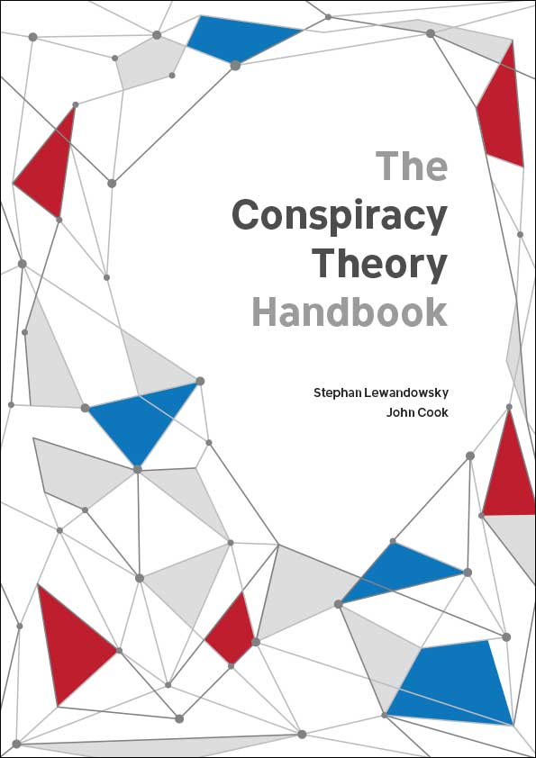
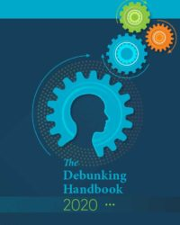

Further Reading
The Covid-19 Vaccine Communication Handbook and Wiki is a volunteer-run project coordinated by members of the University of Bristol JITSUVAX team and involving researchers from over the world. The handbook tracks behavioural science evidence and advice about COVID-19 vaccine uptake and provides an easy way to look up arguments against many common vaccination myths.
The Conspiracy Theory and Debunking handbooks focus on climate change. Members of the JITSUVAX team were involved in writing both of these which provide useful resources to combat misinformation generally.
Conspiracy theories attempt to explain events as the secretive plots of powerful people. While conspiracy theories are not typically supported by evidence, this doesn’t stop them from blossoming. Conspiracy theories damage society in a number of ways. To help minimise these harmful effects, The Conspiracy Theory Handbook, by Stephan Lewandowsky and John Cook, explains why conspiracy theories are so popular, how to identify the traits of conspiratorial thinking, and what are effective response strategies.
The Debunking Handbook 2020 summarises the current state of the science of misinformation and its debunking. It was written by a team of 22 prominent scholars of misinformation and its debunking, and it represents the current consensus on the science of debunking for engaged citizens, policymakers, journalists, and other practitioners.
 
Online games combatting fake news
Members of the JITSUVAX team at Cambridge have created online games aimed at building psychological resistance to online misinformation.
The Bad News Game is a multiple award-winning fake news intervention which can be played here while GoViral! puts players in the shoes of a purveyor of fake pandemic news is the latest tactic in efforts to tackle the deluge of coronavirus misinformation that is costing lives across the world. Play it here.
Both games draw on the theory of psychological inoculation: just as exposure to a weakened strain of a pathogen triggers the production of antibodies to cultivate immunity against a virus, the same can reasonably be achieved with information. Specifically, the games forewarn and expose players to severely weakened doses of the stategies that are used in the production of fake news to stimulate the production 'mental antibodies' against misinformation.
Other links
This guidance document provides basic, broad principles for a spokesperson of any health authority on how to respond to vocal vaccine deniers. The suggestions are based on psychological and public health research, communication studies and WHO risk communication guidelines.
Professor Adam Finn explains what’s in a vaccine and what it does to your body.